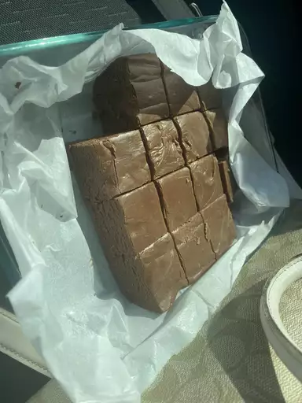

Fudge
Delicious fudge to make. Good for party desert and easy to make.
Integriends needed:
- white suggar
- milk
- butter
- salt
- chocolate chips
- chopped nuts
Steps:
- Line an 8-inch square pan with aluminum foil; set aside.
- Combine sugar, marshmallow cream, evaporated milk, butter, and salt together in a large saucepan over medium heat; bring to a full boil and cook for 5 minutes, stirring constantly.
- Remove from heat and add milk chocolate chips and semisweet chocolate chips; stir until chocolate is melted and mixture is smooth. Stir in nuts and vanilla. Pour into prepared pan; chill in refrigerator for 2 hours, or until firm.